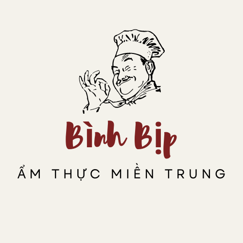
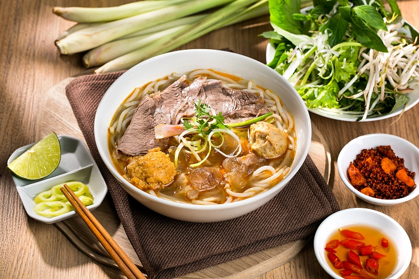

Trang chủ
Giới Thiệu
Về Chúng tôi
Từ Khóa
Công thức
Đăng Ký

Bún Bò Huế
Bắp bò: 600 gr
Nạm bò: 600 gr
Gân bò: 400 gr
Giò heo (chọn giò trước): 1 cái khoảng 800 gr
Xương ông: 1 kg
Mắm ruốc Huế: khoảng 3 muỗng canh
Sả: 6 cây
Gừng: 50 gr
Hành tím, tỏi
Bún tươi cọng to
Rau sống (bắp chuối, giá sống, rau thơm, rau răm, hành lá, củ hành tây)
Chả Huế (tùy thích)
Ớt, sa tế, tiêu, muối, nước mắm, dầu ăn, dấm trắng
Huyết heo (nếu không thích ăn huyết bạn có thể bỏ qua)